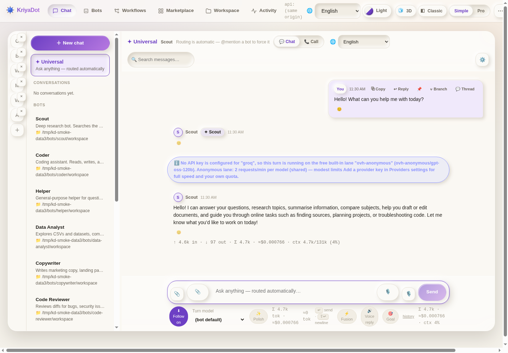
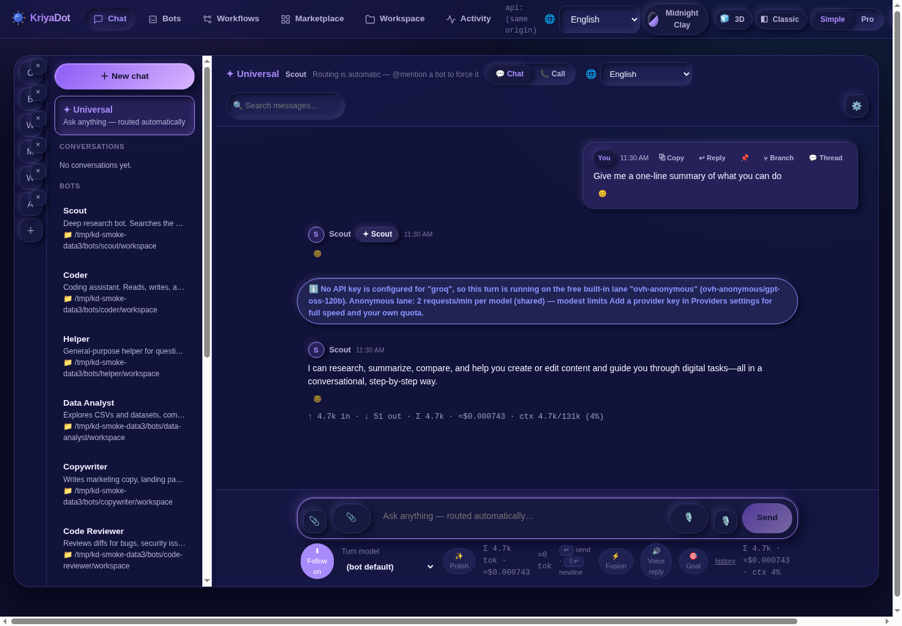
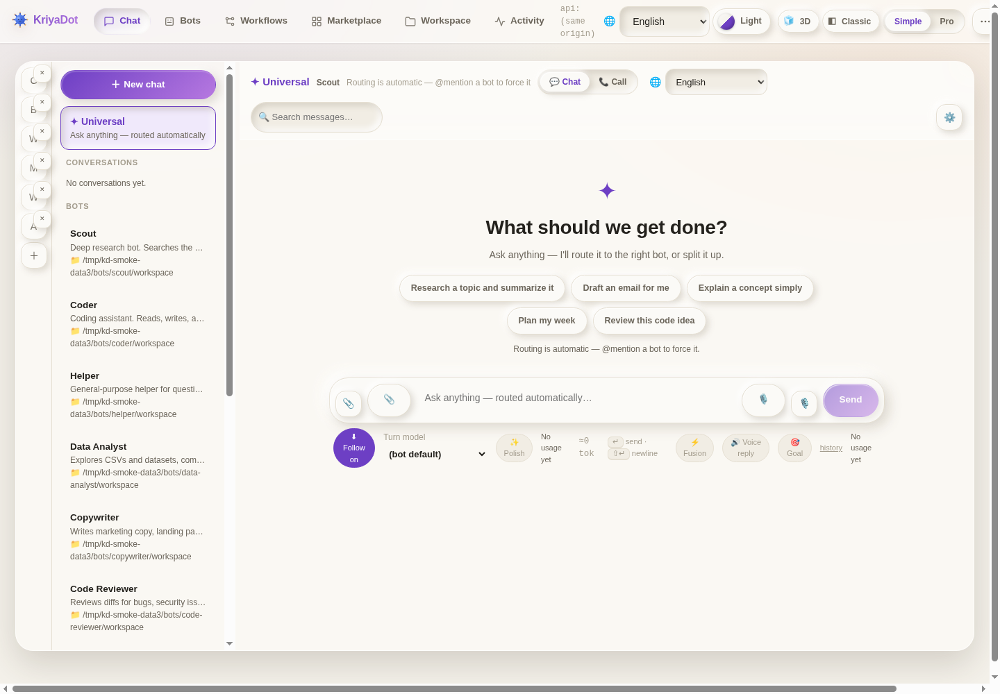
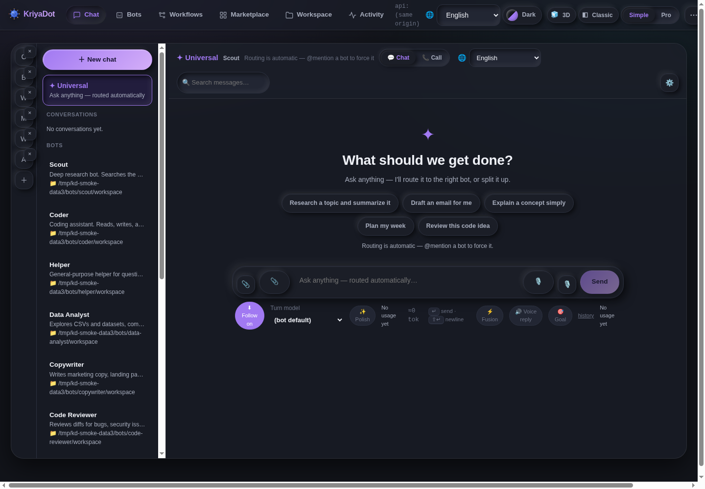
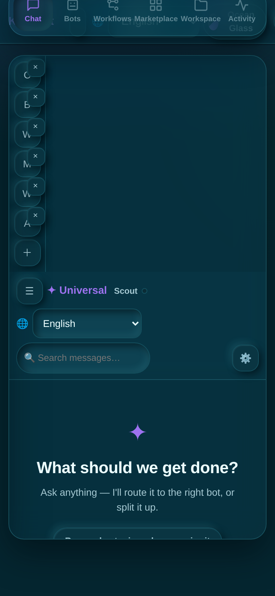

Direct answer
Everyday questions are answered straight away in the thread. No ceremony, no detours.
Open source · Apache-2.0 · Local-first
KriyaDot gives you a team of specialist AI bots in one chat: local-first, governed by approvals and hard safety fences, and multi-bot by design. Run it on your own computer, deploy it to your own cloud — it never runs on our servers.
Sign in with Google and your workspace is created in your own cloud account. Prefer fully local? The desktop app needs no account at all.


How it works
No servers of ours in the middle. You bring the accounts; KriyaDot brings the team.
One sign-in creates your KriyaDot account. This website remembers just two things: who you are, and the address of your workspace — so any device can find its way back to it.
Lightning AI is where your cloud workspace will live. It uses the same Google login, so connecting is a single tap — no new password, no keys to copy around.
KriyaDot deploys into your Lightning account and your bots run there — on your cloud, under your account, billed (if at all) by Lightning to you. Not on our servers, ever.
Lightning's free tier genuinely works with KriyaDot: your workspace stays reachable and self-healing — it sleeps when idle and wakes when you visit. If you want it uninterrupted and always on, that comes with your own Lightning plan, paid by you directly to Lightning. We would rather tell you that up front than surprise you later.
Universal Chat
You used to have to choose which bot to talk to before you could ask anything. Universal Chat removes that step: just ask. KriyaDot works out — openly, in the same thread — how each message should be handled.
Everyday questions are answered straight away in the thread. No ceremony, no detours.
When a message clearly belongs to a specialist — code to Coder, research to Scout, data to Data Analyst — it is routed there, and a chip on the answer tells you exactly who handled it.
A multi-part request is split into sub-tasks that run in parallel, then fused into a single synthesized answer — one reply, not five fragments.


Platform
Universal Chat is the front room. Behind it sits a full agent platform, and every part shares the same bots, memory, and governance.
Specialist bots — Coder, Scout, Data Analyst, Copywriter, Code Reviewer and more — each with its own persona, workspace, and tool policy. A Chief of Staff coordinates the team and keeps the whole picture in view.
Draw automations on a canvas, run them on schedules or triggers, and let bots call workflows — and workflows call bots — as steps in a larger job.
Install ready-made bots, skills, and workflows from the marketplace, or package your own and share them with your team.
Separate KriyaDot instances — yours, a teammate's, another machine's — can discover each other and delegate work across the boundary, each still governed by its own policies.
Carry your team in your pocket: chat with your bots, approve or deny pending actions, and check on running work from your phone.

Watch agents write code as animated diffs, and let bots drive a real desktop under the same approval rules — you can watch, step in, or teach by demonstration.


Governance & safety
An agent that can actually do things — run code, move files, call tools — is only useful if its power is fenced in by design, not by hope. KriyaDot's fences are structural:
Consequential actions pause for your explicit approval — in chat, or from your phone. Nothing sensitive runs silently in the background.
Catastrophic commands are denied outright by policy. They don't get a “are you sure?” dialog — they don't run.
Execution happens inside a sandbox with per-bot tool policies: each bot can only touch the tools, files, and folders its policy allows.
Your workspace knows who is asking. Sign-in identity is verified end to end — a request that merely claims to be you is not treated as you.
Every routing decision, tool call, approval, and denial is logged. If a bot did it, you can see it, when it happened, and under whose approval.
Your cloud, your data
The architecture is deliberately boring, because boring is what keeps your workspace yours:
The front door. It introduces KriyaDot, signs you in, and launches your workspace. It never carries your chat traffic and never runs your bots.
After launch, your browser talks directly to your instance. There is no KriyaDot server relaying your conversations.
Your KriyaDot workspace — in your Lightning cloud, or on your own machine. Your bots, your data, your rules.
If this website ever goes offline, existing workspaces keep working exactly as before — you lose only the sign-in launcher. Bookmark your instance's address and you never need this site to reach your team.
Downloads
Free and open source (Apache-2.0). The current release ships desktop builds for Windows, macOS, and Linux, plus the Android companion. Every build is the full platform — chat, bots, workflows, governance, marketplace.
Desktop installer for Windows 10/11 (64-bit). Download, install, launch — no account needed for fully local use.
Get it from ReleasesDesktop build for Mac. Grab the current release from GitHub and drag KriyaDot into your Applications folder.
Get it from ReleasesDebian/Ubuntu package, plus a portable AppImage that runs without installing anything.
Get it from ReleasesThe companion app: chat with your team and clear approvals from your phone. Direct APK from the releases page.
Get it from ReleasesBuilding from source instead? The full repository — code, docs, and issues — lives at github.com/MaddyInnov/KriyaDot.
Pricing
There is no KriyaDot subscription hiding in this page. Here is every cost, and who it goes to:
Free
KriyaDot is open source under the Apache-2.0 license. Download it, run it on your machine, modify it, ship with it — no fees, no license keys, no expiry.
Your Lightning plan
Your cloud workspace runs in your own Lightning AI account, on one of Lightning's own tiers:
You pay Lightning directly, at Lightning's prices — we never mark it up and never see your bill.
See Lightning's pricingPlatform note: KriyaDot charges no subscription today. If platform tiers are ever introduced, they will be announced openly before anything changes — existing local use stays free and open source regardless.
FAQ
On your machine and in your own cloud instance — your chats, files, keys, and bot workspaces stay there. This website stores only your account record and your instance addresses, so it can launch you back into your workspace. It never stores chat content.
Your workspace keeps working. Existing instances run independently of this website; you lose only the sign-in launcher. A bookmarked instance address (or the desktop app) gets you straight back in.
No. KriyaDot ships with a built-in keyless free lane, so you can chat and try the platform with zero setup. Adding a free key from a model provider is an optional upgrade for higher limits and more models — your keys stay in your instance's vault.
Yes. The desktop app is fully local-first: install it, and everything runs on your machine with no account and no website involved. The cloud flow on this page is a convenience, never a requirement.
Yes — Apache-2.0. Read the code, audit the governance, file issues, or contribute at github.com/MaddyInnov/KriyaDot.
v0.1.0-alpha is an early, honest build: the full platform is there, but expect rough edges. Back up anything important, and report what you find on GitHub — reports shape what ships next.